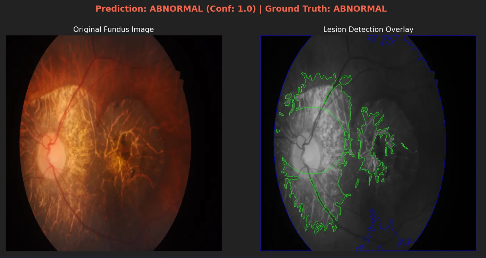
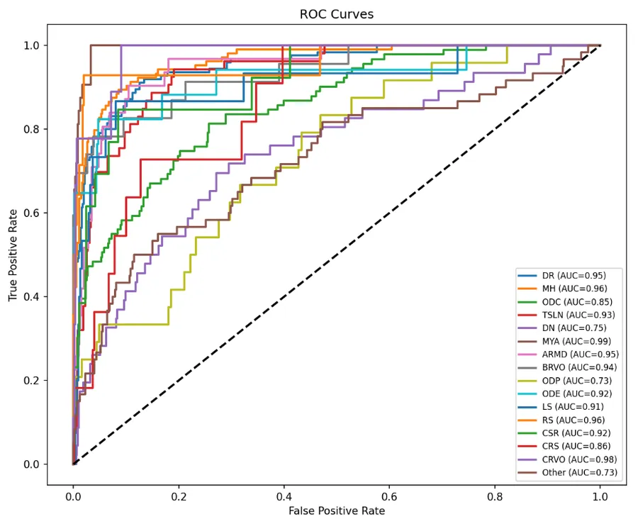
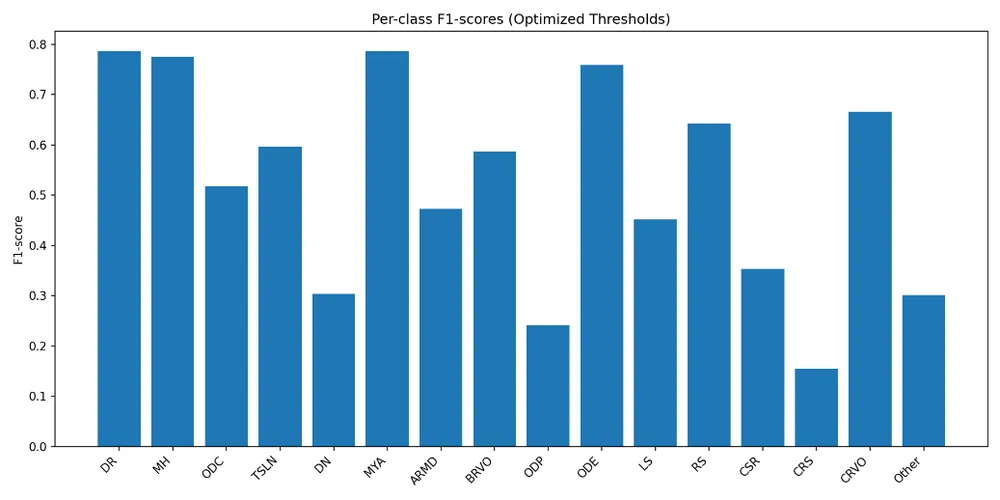
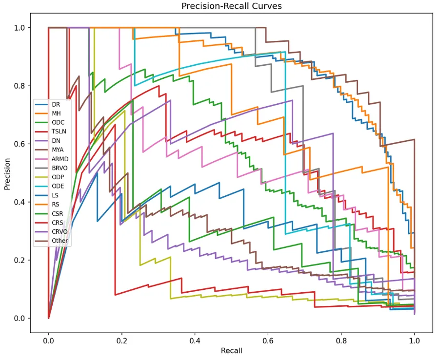
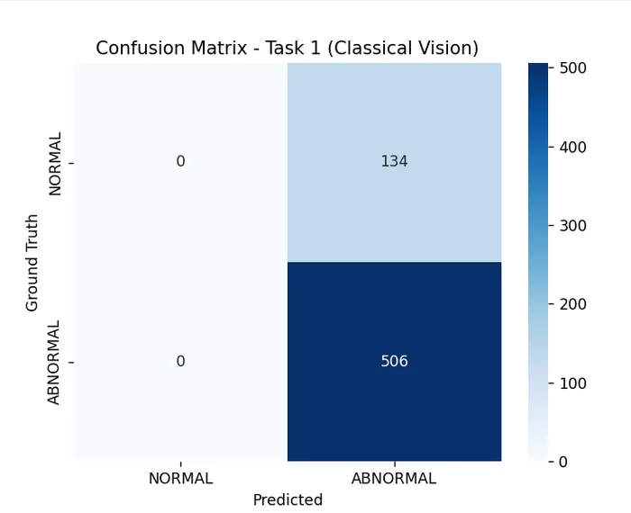
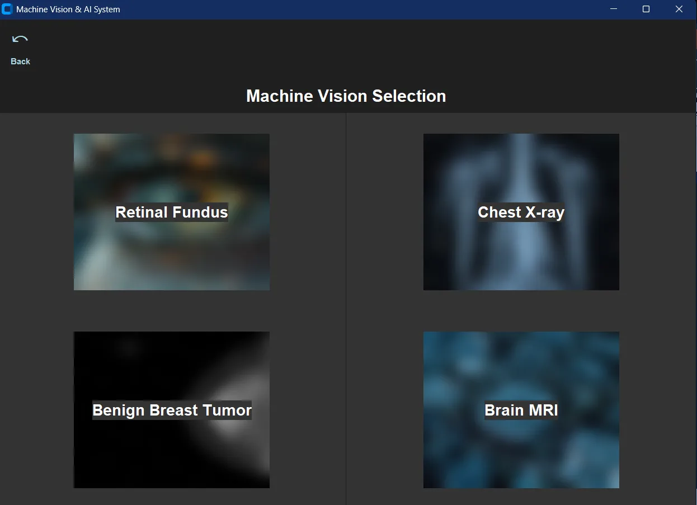
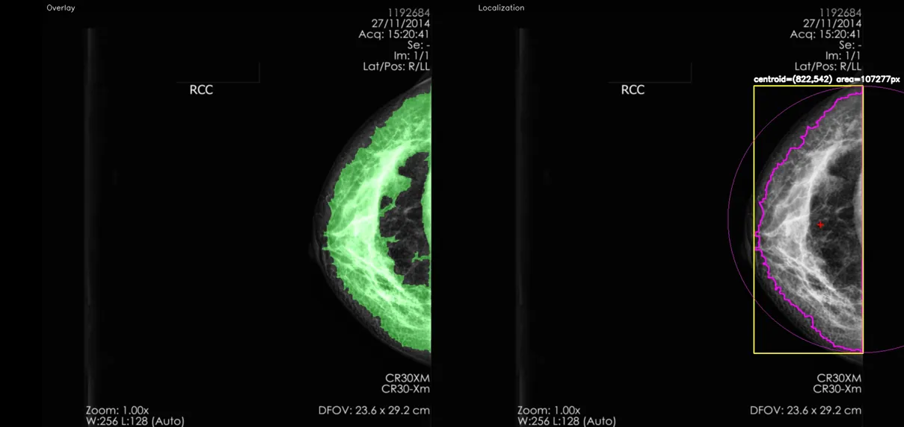
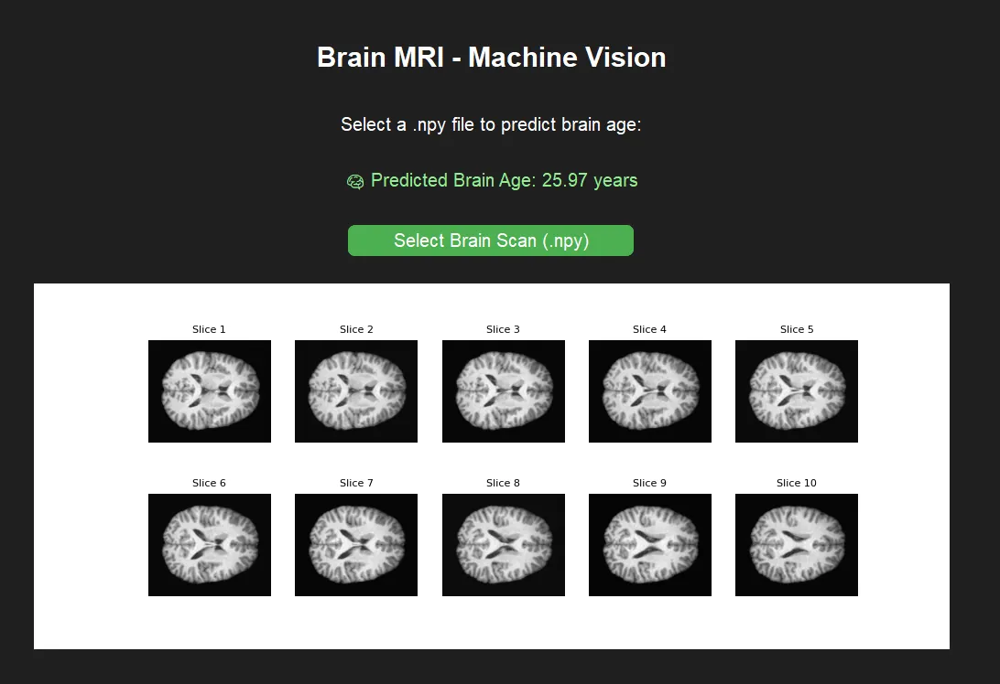

← Archive
Multi-Model Medical Imaging
Classical machine vision against deep learning on medical images, with four team-built models joined into one desktop app.

Overview
Each member built a classical pipeline and an AI model for a different condition. I took retinal fundus disease using RFMiD: 3,200 images from three fundus cameras, labelled for 45 conditions by two senior retinal specialists.
My classical pipeline (enhancement, vessel and lesion detection) reached 79.06% accuracy, but the confusion matrix showed it flagged everything as abnormal. I reported that honestly as the main weakness of rule-based lesion detection, then moved to deep learning.
What I did
- 01Replicated a published ResNet50 binary normal/abnormal classifier: AUC 0.966, accuracy 91.1%, sensitivity 91.9%, specificity 88.1%.
- 02Extended it to multi-label disease classification with per-class thresholds chosen by maximising F1, reaching a hamming accuracy of 0.9446 and a macro-AUC of 0.8964.
- 03Explained the model's decisions with Grad-CAM.
- 04Led integration of all four models (retinal fundus, chest X-ray COVID-19, benign breast tumour, brain-MRI age) into one GUI.
Signal path
- Fundus image
- Preprocessing
- ResNet50
- Per-class thresholds
- Grad-CAM
- Group GUI
Gallery · 7 images
A closer look






